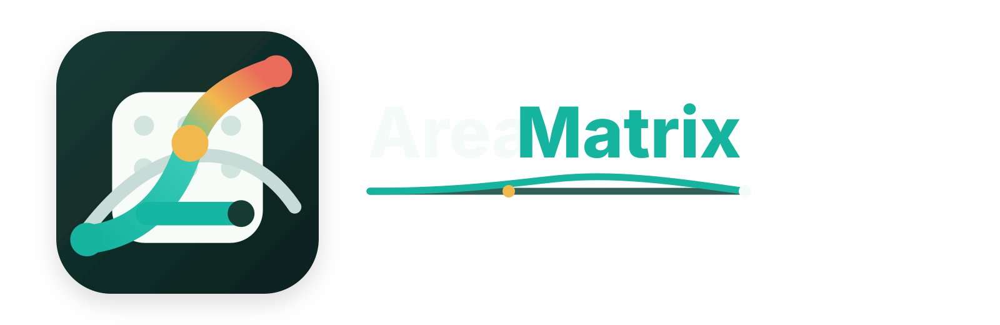
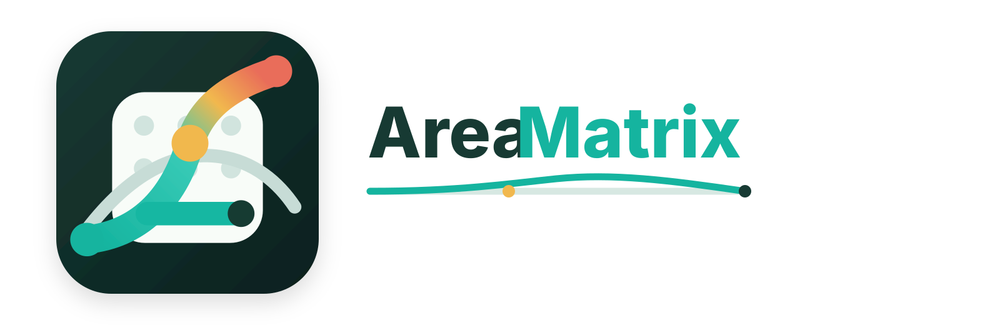

将散乱的文件，化作知识枢纽。 无需搬运，只需指认一个本地文件夹。AreaMatrix 会为你建立结构清晰、无感同步的私人资料库。
智能引擎，自动归档
把文件拖入视窗，底层的智能规则与 AI 将自动识别内容、建议命名，并为其在庞大复杂的目录树中寻找到最佳的物理归属。
零侵入，绝对的安全防线
我们仅仅在底层建立一层可视化的超级索引。程序承诺永远不会在后台私自改动、移动或覆盖您宝贵的源文件与已有目录结构。
全局概览，时间线级追溯
自动生成专属的 Markdown 资料库大纲。您的每一次挪动、修改，哪怕是在系统原生的 Finder 中操作，都会被精准记录并实时回流。
工作流与算法揭秘
一分钟了解 AreaMatrix 如何通过轻量级的本地索引引擎和 FSEvents 监听，帮助您彻底终结文件整理的焦虑感。
立刻开启您的本地知识库
放心，我们仅仅是为您指认的文件夹建立一层索引。您可以随时停止使用，没有任何锁定风险。点击即可瞬间接管！
拖拽归档，智能分类
识别、重命名并自动落位
零侵入，绝对安全
不碰原文件，真相在文件系统
全局概览，改动追溯
生成大纲，双向同步改动日志